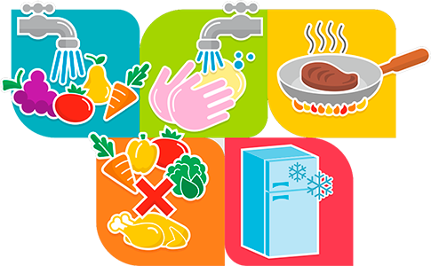

COVID-19

¿Qué son las ETA's?
Son Enfermedades Transmitidas por Alimentos, se deben a la ingesta de alimentos o agua contaminados con agentes químicos o microbiológicos en tales cantidades que afecten la salud del consumidor a nivel individual o en grupos de población.
Síntomas
- Náuseas
- Vómitos
- Dolor estomacal
- Diarrea
Medidas Preventivas
- Use agua potable.
- Seleccione alimentos saludables y frescos.
- Lave las frutas y las hortalizas, especialmente si se comen crudas.
- No consuma alimentos después de su fecha de caducidad.